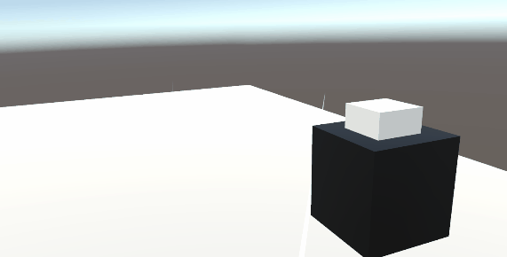
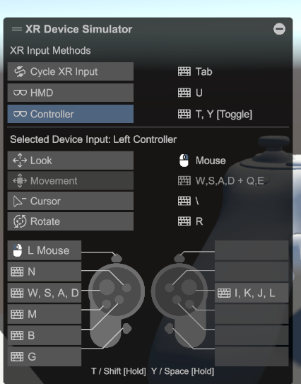

xrtoolkit2.3预览版本体验
xrtoolkit
2.3预览版更新，测试一下新功能。
安装
目前还是预览版本，记得在packageManager中打开预览开关。
然后按名称载入com.unity.xr.interaction.toolkit，记得指定版本2.3.0-pre.1
戳
又一个交互器，最大的亮点是对UI的支持。可以做到类似触摸屏的效果了，不用傻傻的再用射线交互了。做一些类似的按钮交互也更方便了。
凝视
可惜手头上并没有Oculus，这个目前体验不了。
交互组
他们终于意识到搞这么多交互器，然后手动去控制何时应该启用和关闭哪个是多么复杂的事情了。
这个东西就是给交互器排序，然后在有多个交互器都可以悬停或选择时，按顺序只启用优先级最高的那个。
具体用起来就比如说，Direct Interactor比Ray Interactor优先级高的话，在距离物体很近，Direct Interactor可以悬停的时候，就会禁用Ray Interactor。体验上要好很多。
Affordance
不知道怎么翻译才确切。
是个挺有意思的工具。感觉是为了无代码编程准备的。
总结起来就是类似Button的Transition。根据不同的状态，如未启用、闲置、悬浮、选择和使用等来设置需要的值（可以是颜色、数值、向量乃至音频）。然后由一类AffordanceReceiver的组件来依据这些设定好的主题来插值或者播放，最后把插值后的结果给到对应的材质、Player或者缩放。

虽然这些功能手动写也不会太麻烦，但还是很乐于看到官方给出现成的解决方案的。
模拟器
xr模拟器也更新了一下，类似FPS的交互模式，增加了新的UI，总算是能用了。

总结
不大不小的更新吧，有了戳击交互，对于UI就更方便了。凝视目前手里没有能用的设备不好说，最后的那两个也算是锦上添花的功能了。
期待下次更新能把XR Hands和xr toolkit结合起来，那就算xr toolkit功能齐全了。